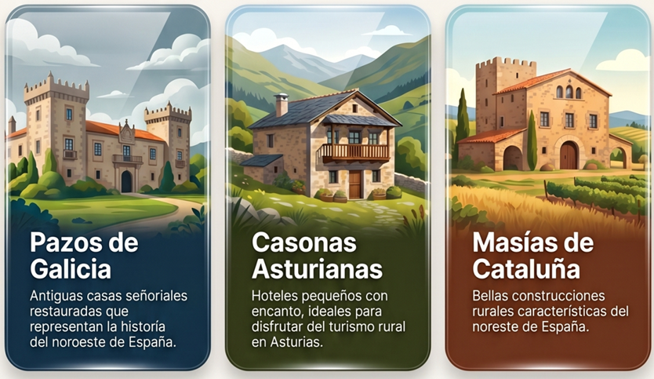
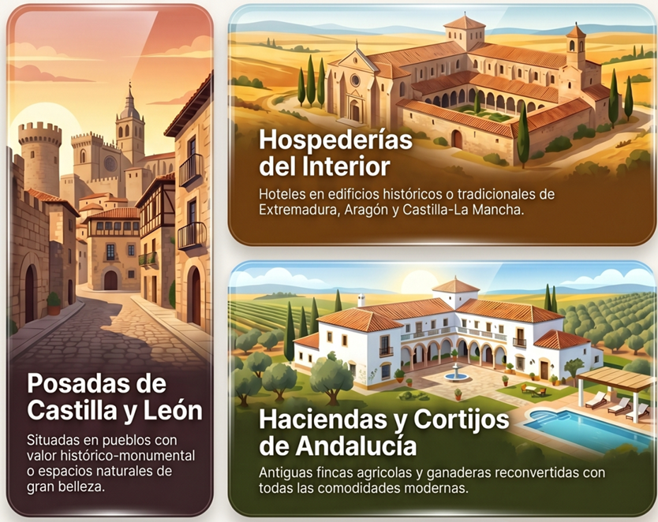

Las Comunidades Autónomas han caracterizado nuevas fórmulas de alojamiento, basadas en el aspecto autóctono de la construcción y sus atributos característicos, que sirven de elemento de diferenciación. Se les conoce bajo la denominación de hoteles especiales y son considerados, incluso, marca de calidad. Son los siguientes:

Pazos de Galicia: antiguas casas señoriales totalmente restauradas y auténticos símbolos de la historia de esta zona del noroeste de España.
Casonas Asturianas: hoteles de calidad, pequeños y con encanto, perfectos para el turismo rural en Asturias.
Hospederías de Extremadura, Aragón y Castilla – La Mancha: hoteles erigidos por lo general sobre edificios históricos o tradicionales propios de estas zonas.
Posadas de Castilla y León: todas están situadas en pueblos con valor histórico-monumental o en espacios naturales de gran belleza.
Haciendas y Cortijos de Andalucía: son construcciones tradicionales que tienen su origen en la explotación agrícola y ganadera de las fincas donde se encontraban y que hoy cuentan con todas las comodidades.
Masías de Cataluña: bellas construcciones rurales muy frecuentes en esta zona del noreste de España.
